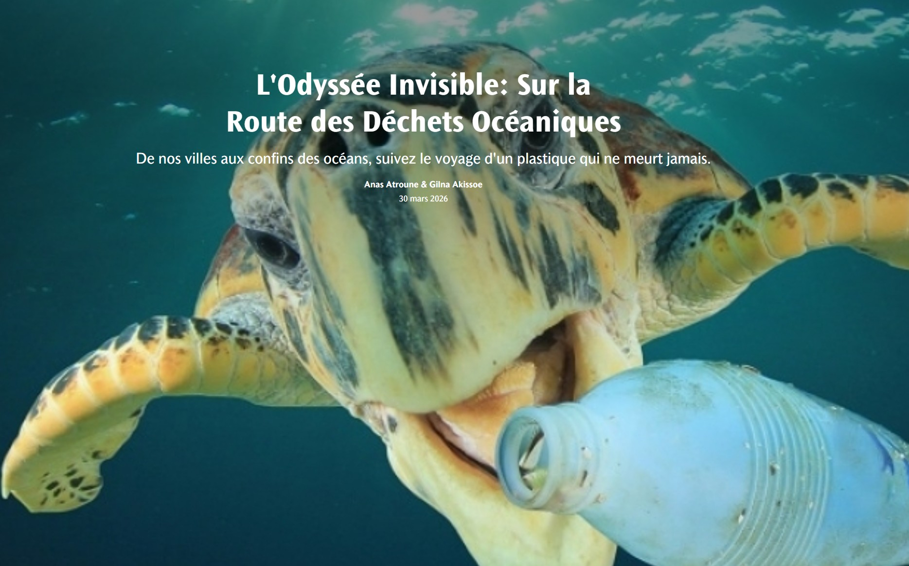
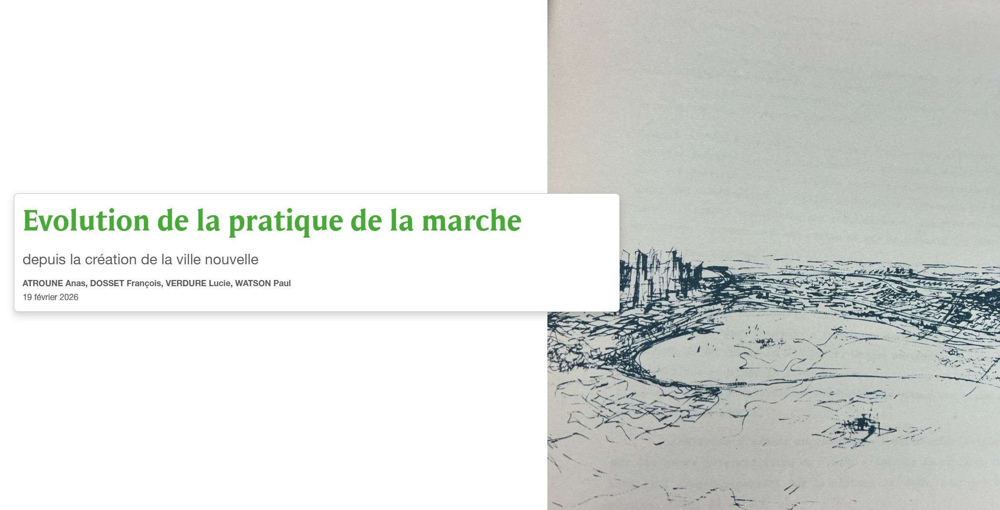
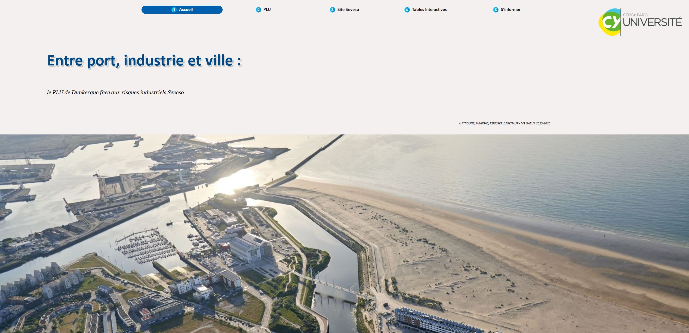
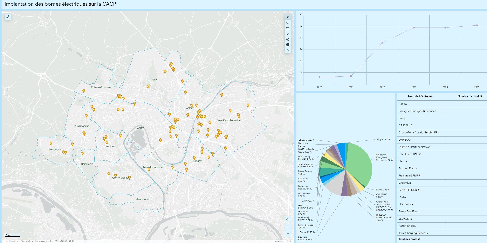
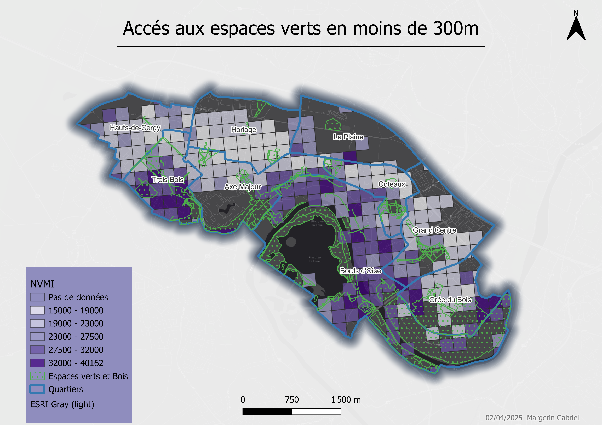
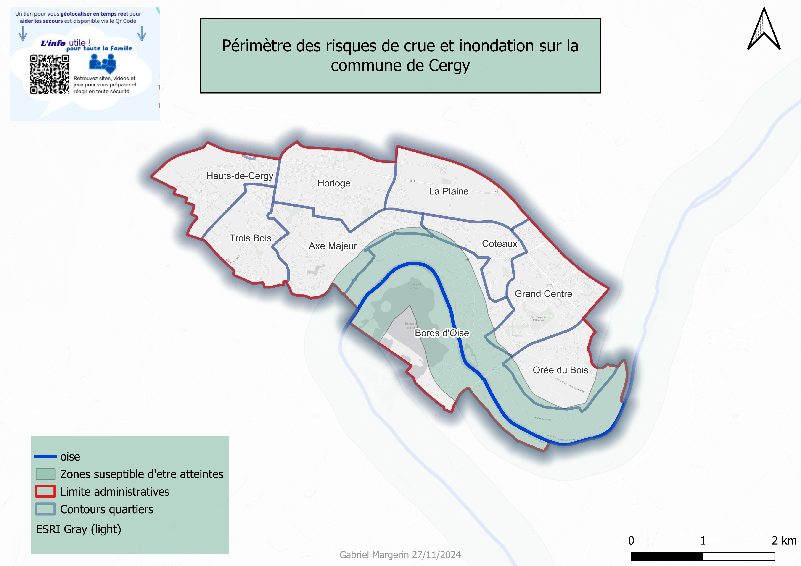
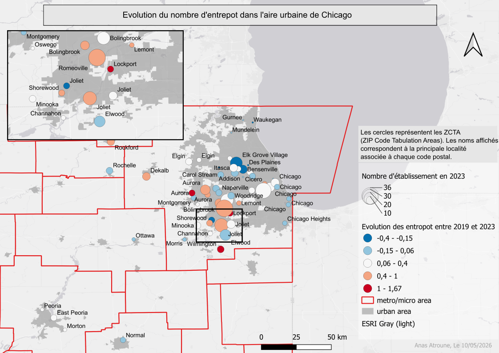
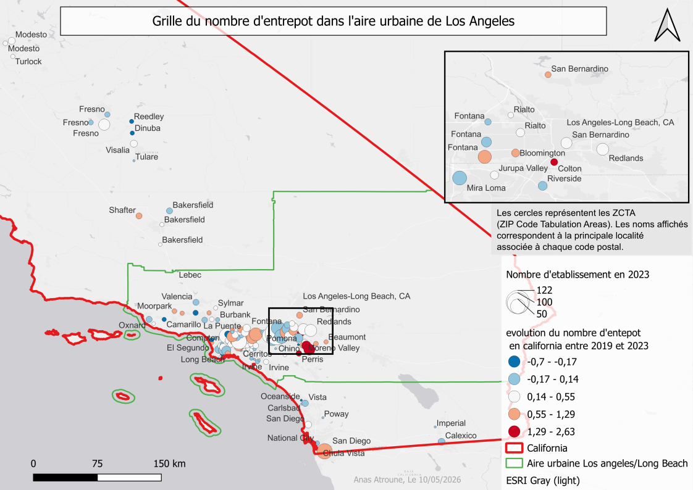
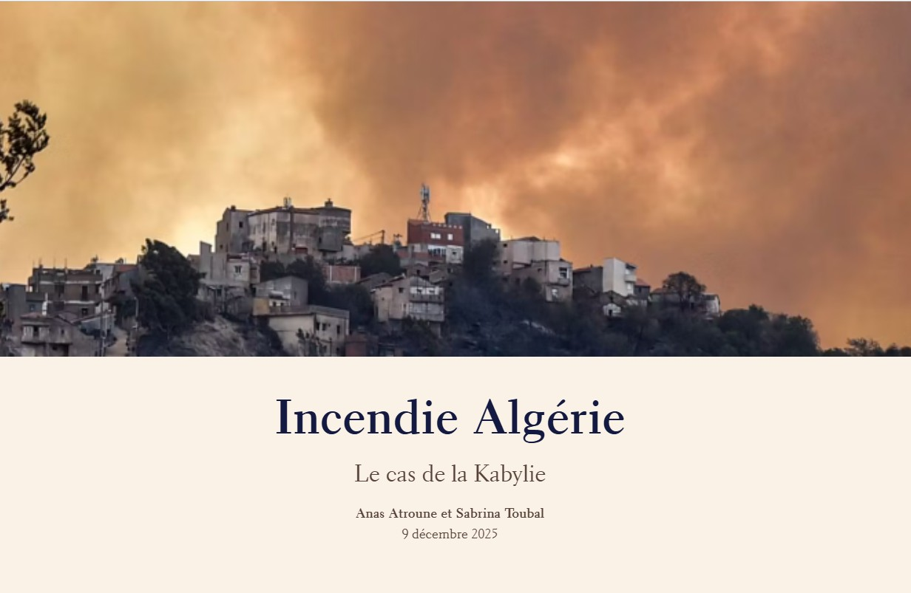
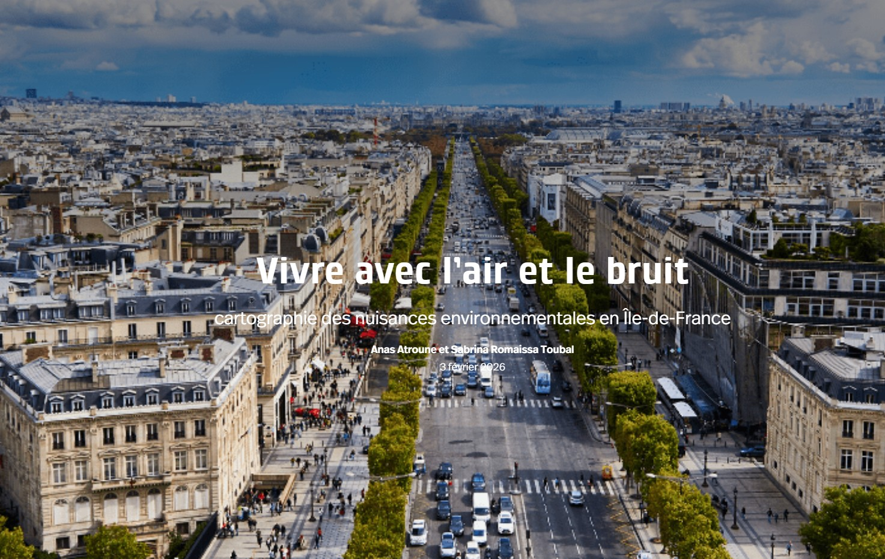

Projets cartographiques

★ Story Map · À la une

Story Map · CACP

Experience · Risques industriels

Dashboard · ArcGIS

Carte · Justice environnementale

Carte · Risques naturels

Carte · WAREBURBIA

Carte · WAREBURBIA

Poster · Sémiologie

Carte · Aménagement urbain

Story Map · Risques

Story Map · Environnement